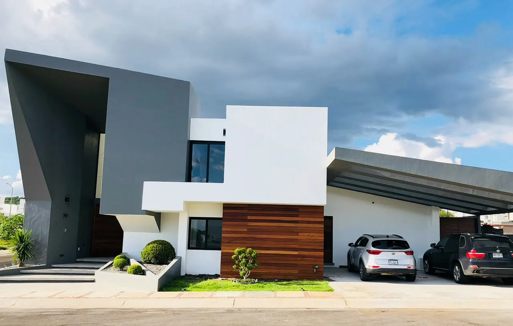
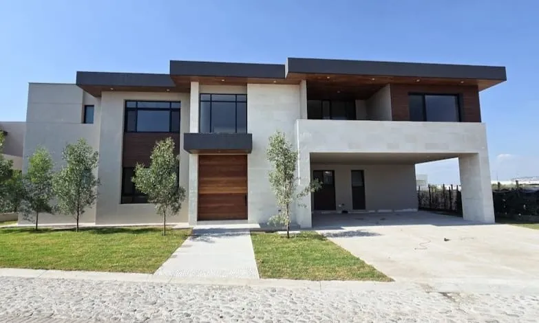
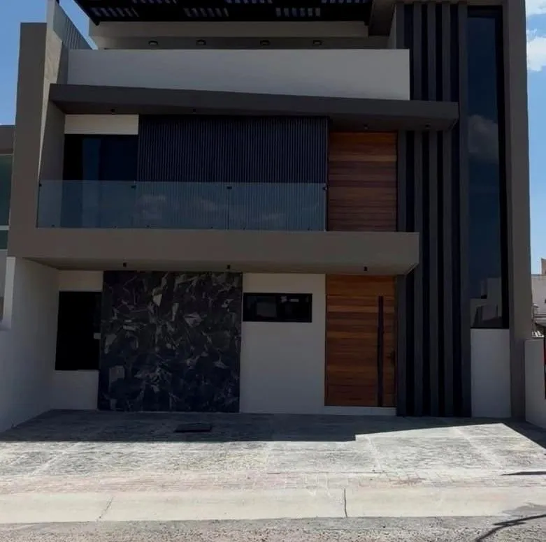
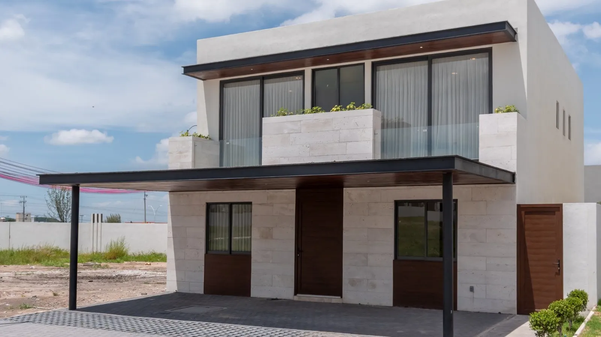
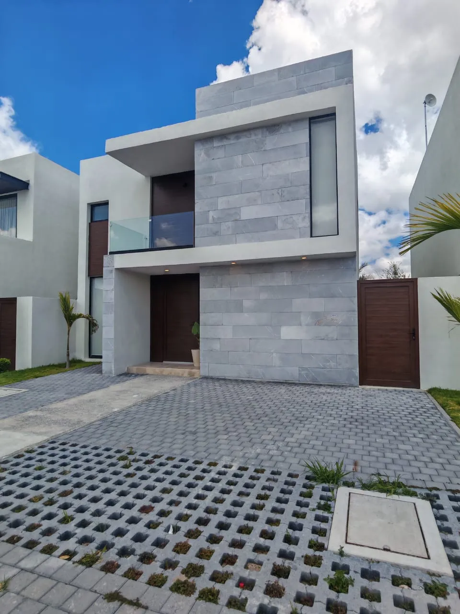
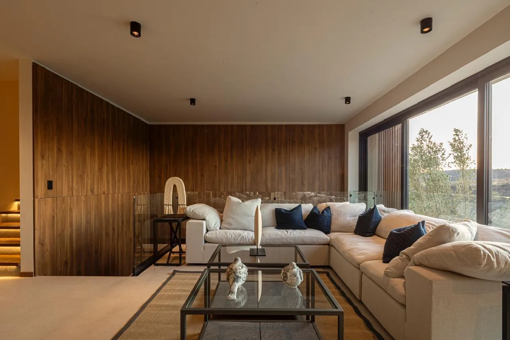
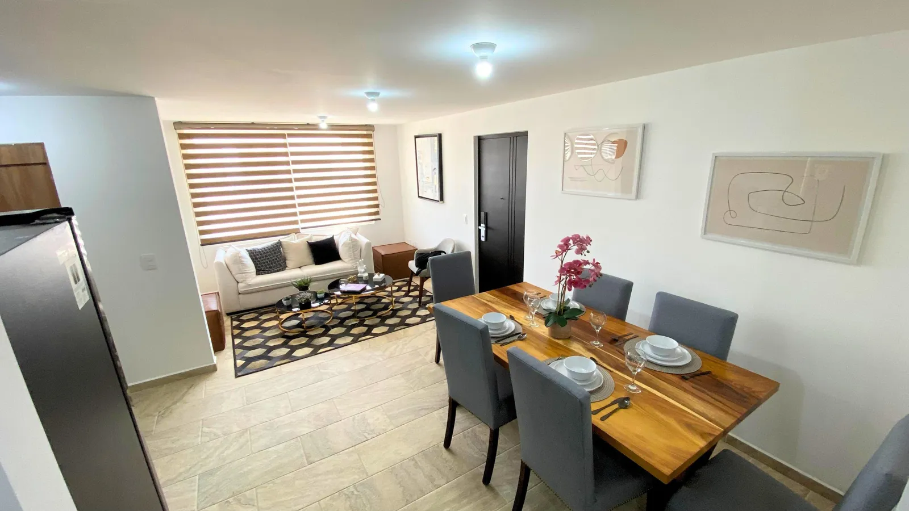
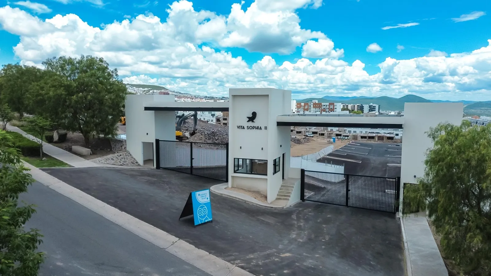
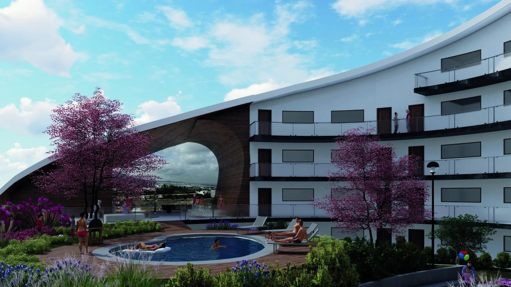

Escuchar antes de proponer
Parto de tus necesidades, tus tiempos y tu presupuesto para enfocar la búsqueda.
BIENES RAÍCES EN QUERÉTARO
Comprar, vender o invertir empieza por entender qué necesitas. Te acompaño a comparar opciones y dar el siguiente paso con claridad.
Hablemos por WhatsApp
ALTÁRICA JURIQUILLA Conoce la residencia ↗QUIÉN SOY · IKER SAGAL
Soy Iker Sagal. Trabajo en bienes raíces desde 2019 y acompaño operaciones inmobiliarias en Querétaro. Mi experiencia incluye acompañar a personas que cambian de ciudad, buscan una nueva etapa de vida o quieren evaluar una inversión inmobiliaria.
Antes de mostrarte propiedades, quiero entender tu rutina, tu presupuesto y lo que esperas de este cambio. A partir de ahí, comparo contigo las opciones, explico sus ventajas y los puntos que conviene revisar.
“Como si me estuviera atendiendo a mí mismo.”
Así entiendo mi trabajo: hablarte claro, darte espacio para decidir y seguir pendiente después de la firma.
LO QUE PUEDES ESPERAR DE MÍ
Parto de tus necesidades, tus tiempos y tu presupuesto para enfocar la búsqueda.
Te explico números, condiciones, ventajas y riesgos para que decidas con información y sin presión.
Busco condiciones justas y doy seguimiento a lo acordado con las partes de la operación.
Te acompaño con la documentación, la escrituración y el seguimiento de la entrega, según tu operación.
BLOG · GUÍAS PARA ELEGIR
Características, beneficios y preguntas
para decidir dónde quieres vivir.
IDENTIDAD Y VIDA COTIDIANA
Tradición, barrios con servicios y opciones residenciales para distintas etapas de vida.
Conoce la zona Ver propiedades en esta zona ↗NUEVAS FORMAS DE HABITAR
Una guía para comparar Zibatá, Zákia y El Refugio desde tu rutina y el desarrollo específico.
Conoce la zona Ver propiedades en esta zona ↗VIDA RESIDENCIAL AL NORTE
Entorno universitario y opciones residenciales para elegir una ubicación que acompañe tu estilo de vida.
Conoce la zona Ver propiedades en esta zona ↗EXPLORA QUERÉTARO
Juriquilla · El Campanario · La Vista
Zibatá · Vela Sur y más
$14,450,000 MXN
Precio de referencia de ficha4 recámaras · Recámara en planta baja
Explorar propiedad Casa · La Vista Residencial
Casa · La Vista Residencial$11,900,000 MXN
Precio de referencia de ficha250 m² de terreno · 360 m² de construcción
Explorar propiedad
Casa · El Campanario$32,400,000 MXN
Precio actualizado · confirma disponibilidad842.25 m² de terreno · 572.86 m² de construcción techada
Explorar propiedad
Casa · Juriquilla$7,250,000 MXN
Precio de referencia de ficha215 m² de terreno · 379 m² de construcción
Explorar propiedad
Casa · Vela Sur$7,000,000 MXN
Precio de referencia de ficha264 m² de terreno · 235 m² de construcción
Explorar propiedad
Casa · Vela SurDesde $5,950,000 MXN
Precio de referencia de ficha264 m² de terreno · 190 m² de construcción
Explorar propiedad
Casa · Punta Serra$8,000,000 MXN
Precio de referencia de ficha129.50 m² de terreno · 321.15 m² de construcción
Explorar propiedad
Departamento · Querétaro$2,340,000 a $2,510,000 MXN
Precio actualizado · confirma disponibilidad2 recámaras · Sala de TV
Explorar propiedad
Departamento · Zibatá$2,850,000 a $3,435,000 MXN
Precio actualizado · confirma disponibilidad2 recámaras · 2.5 baños
Explorar propiedad
Departamento · Querétaro$4,980,000 MXN
Precio actualizado · confirma disponibilidadDistintas tipologías · Terraza o jardín según unidad
Explorar propiedadNo hay propiedades con esta combinación. Prueba otro filtro o cuéntame qué buscas.
TU SIGUIENTE PASO
Una zona, una idea o una propiedad. Empecemos por ahí.
Hablemos por WhatsApp